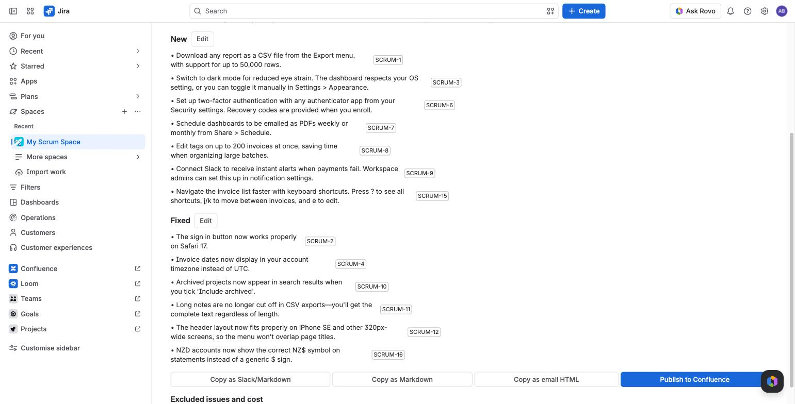

Release notes and sprint digests

From versions
- Open WhatShipped in the project sidebar and stay on the Releases tab.
- Tick one or more versions, up to 20, to cover them in one note.
- Tick one or more audiences.
- Read the estimate, then choose Generate.
When the progress card says "Draft ready", with bullet count, issue count and cost, choose Open.
From any JQL
Use Generate from JQL on the Releases tab. This is the way in for Kanban projects and projects without versions.
- Edit the JQL. It starts with issues marked Done in the last 14 days that have no fix version.
- Give the note a name if you like.
- Choose Check and estimate, then Generate from JQL.
Jira checks the JQL first. If you can see fewer of the matching issues than the app can, the request is refused, so a note never includes issues you cannot see.
Try it on sample data
If a project has no versions, or no resolved work in them, the Releases tab offers Try it on sample data. It drafts a note from eight built-in example issues, for about $0.08 of budget. Sample notes cannot be published.
From a sprint
Choose WhatShipped: sprint digest in the sprint's actions menu, or use Digest a sprint on the Digests tab.
Only resolved issues that pass the visibility rule are included. Unfinished sprint work is listed in the excluded-issue report. It is not written up as "carried over" yet.
Automatically on release
When a version is released in Jira, WhatShipped starts a customer draft for it: at most 5 per site per day, and only with 10% of the month's budget left. It is never published without a person. Turn it off in Project settings > WhatShipped.
The visibility rule
The visibility rule decides which issues are read. The default is:
- Issue types Story, Bug, Task and Improvement.
- Resolutions Done and Fixed.
- No sub-tasks.
Change any of these in Project settings > WhatShipped.
Two labels change how an issue is treated:
- internal (you can rename it). The issue is only used by audiences that include internal changes, such as the Internal voice.
- security. For audiences without internal changes, the issue becomes a single generic line: "A security issue was fixed." Issue types that contain "security" or "vulnerability", and issues with a Jira security level, are treated the same way.
The excluded-issue report
Every note lists the issues it skipped and why, for example "sub-task", "resolution Won't Do" or "unresolved (In Progress)". It is at the bottom of the review screen.
When nothing matches
If issues were found but none passed the rule, WhatShipped says why, for example "4 excluded: type Feature not in rule; 2: not resolved." When a rule change would help, choose Edit visibility rule, fix it in place and generate again.
Size and cost limits
Before you generate, WhatShipped shows the issue count and an estimated cost. It refuses a request that would read more than 300 issues or cost more than about $1.00. The refusal says how to narrow it: fewer audiences, fewer versions or a narrower JQL filter.
Optional: linked pull request titles
Read linked PR titles in Project settings adds up to five remote link titles per issue. It is off by default, as it costs one extra Jira call per issue.
Assignees and reporters are never sent to the model. See Security.